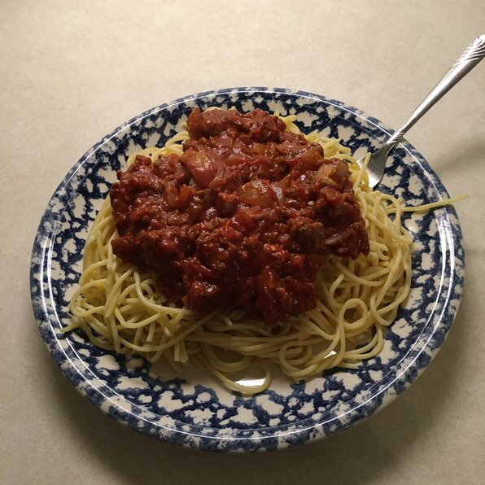

Spagetti

Description
This lovely and easy meal is wonderful to make in just 30 minutes!
I love making this for my kids!
Ingredients
11 ounce Prego traditional
Steps
Turn oven on as directed by garlic knots instructions.
In medium sauce pot bring water to a boil, add pasta and cook for 8 to 10 minutes.
In large killet over medium heat, cook ground beef until meat is brown.
Strain the meat, then return back to skillet. Add Prego to meat, and stir occasionally.